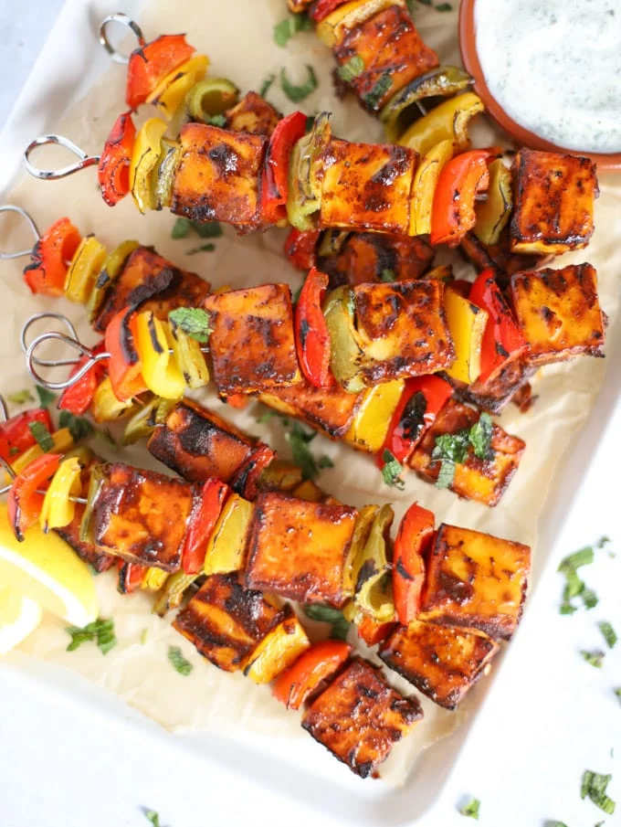

Paneer Tikka

Paneer Tikka is a popular Indian dish made from cubes of paneer (Indian cottage cheese), bell peppers, and onions marinated in a spicy yogurt marinade and then roasted in a clay oven, also known as Tandoor traditionally.
However, a BBQ grill, oven, air fryer, or stovetop skillet works well.
Ingredients
- Paneer
- Veggies
- Yogurt
- Gram flour
- Ginger & Garlic paste
- Red chilli powder, Garam masala
- Oil
- Lemon juice
- Cilantro
Preparation Steps
- Add hung curd, besan, ginger-garlic paste, turmeric powder, red chili powder, cumin powder, garam masala, chaat masala, kasuri methi, lemon juice, salt, oil in a large bowl and mix everything.
- Then add the paneer, bell peppers, and onion. Toss well to coat. Cover the bowl and refrigerate for at least 30 minutes or refrigerate for up to 24 hours.
- Meanwhile, soak wooden skewers in cold water for at least 10 minutes, preventing them from burning in the air fryer, oven, or grilling.
- Take a skewer, gently thread paneer, bell peppers, and onion on a skewer, alternating with each other. Similarly, prepare the remaining screwers.
Feedback
Back to top